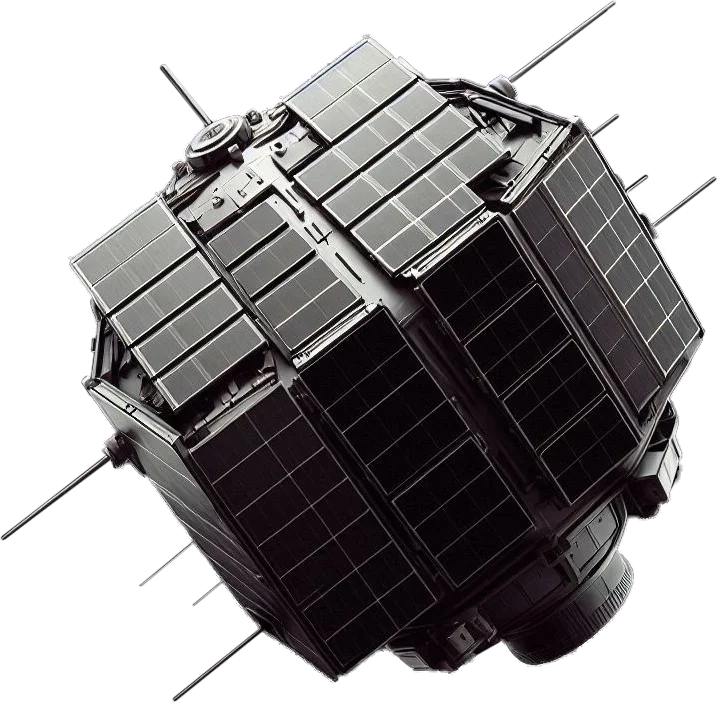
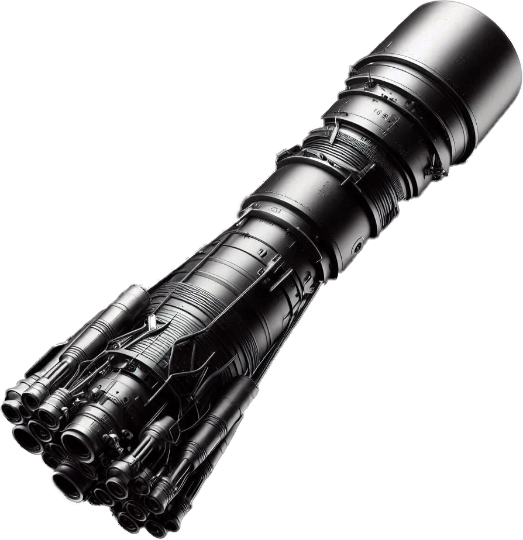
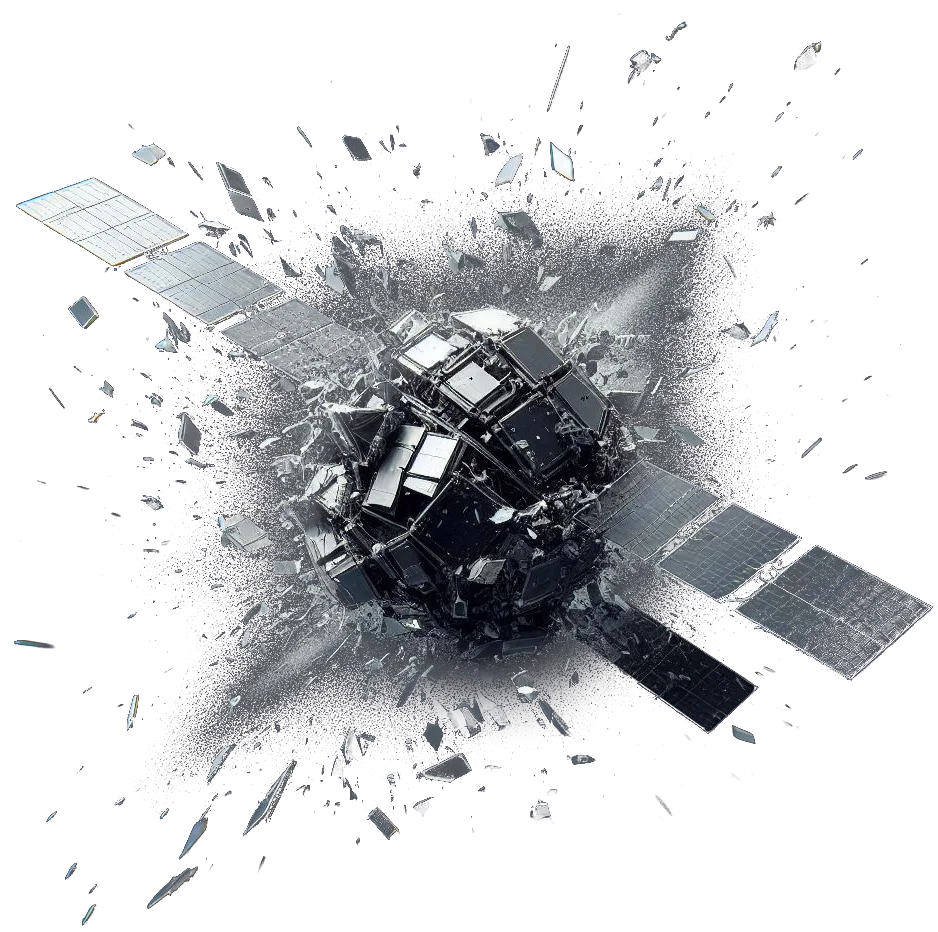

Space debris
Space debris refers to defunct, human-made objects in Earth's orbit, including non-functional satellites, spent rocket stages, and fragments from disintegrated spacecraft. These debris vary in size and pose significant threats to active satellites and space missions due to high-speed collisions. Sources include inactive satellites left in orbit, discarded rocket parts, and fragments from explosions or collisions, such as those caused by anti-satellite (ASAT) tests. This growing debris field risks creating a cascading effect, known as the "Kessler Syndrome," making it critical to develop tracking, removal, and mitigation strategies to protect space infrastructure.

Non-Functional Satellites
Satellites that have outlived their operational lifespan or malfunctioned remain in orbit without control or purpose. These defunct satellites pose collision risks to active satellites and spacecraft, as they cannot be maneuvered, contributing to the growing population of hazardous space debris.

Spent Rocket Stages
After delivering their payloads into orbit, spent rocket stages are discarded and left in space. These large, inert components remain in orbit and, without proper deorbiting measures, contribute to the growing space debris problem. They pose collision risks to operational spacecraft and can generate additional debris through fragmentation.

Fragments from Explosions or Collisions
High-speed collisions between satellites or explosions due to fuel leaks, malfunctions, or deliberate destruction create thousands of debris fragments. These fragments range from tiny particles to large chunks, traveling at high velocities, and significantly increase the risk of further collisions, compounding the space debris issue.
Importance
Imaging space debris helps track the location, trajectory, and characteristics of objects in orbit. This information is crucial for space traffic management, enabling satellite operators and space agencies to plan satellite launches, maneuvers, and avoid potential collisions. They pose a significant risk to operational satellites, spacecraft, and even crewed missions in space. Collisions with space debris can cause catastrophic damage due to the high velocities involved, creating even more debris.

Adaptive
Imaging
Of space debris
Imaging